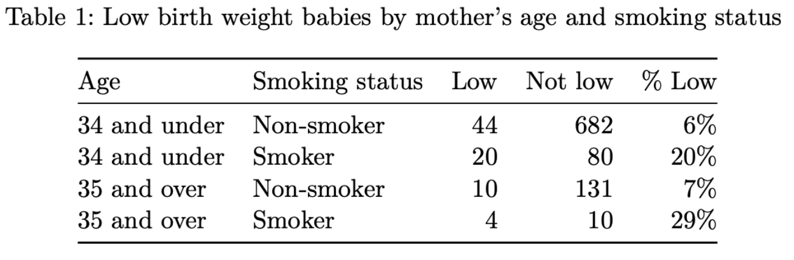
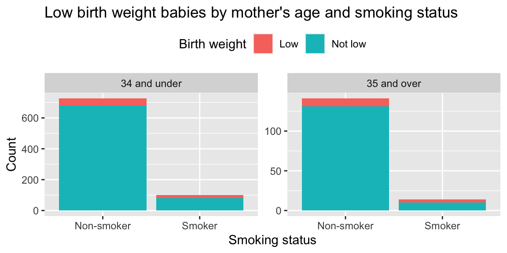

HW 6
More lemurs and even more babies
accepted until Sun, Dec 7, 11:59 pm with no penalty
Introduction
Odd numbered questions on this assignment have AI feedback available. They’re for practice, not graded, and you get immediate feedback from AI, based on rubrics designed by the course instructor. Some of them are also required for subsequent questions. We expect you to complete these questions but there won’t be points allocated to them on the assignment. You will still need to tag these pages Gradescope. These questions are marked with “🤖 Feedback from AI”.
Click to expand if you want to review the video that demonstrates how to use the AI feedback tool.
Even numbered questions are graded and you will receive feedback from the course instructional team within a week. These questions are marked with “🧑🏽🏫 Feedback from Humans”.
You will complete all questions in the file called hw-6.qmd.
By now you should be familiar with how to get started with a homework assignment by cloning the GitHub repo for the assignment.
Click to expand if you need a refresher on how to get started with a homework assignment.
- Go to https://cmgr.oit.duke.edu/containers and login with your Duke NetID and Password.
- Click
STA199under My reservations to log into your container. You should now see the RStudio environment. - Go to the course organization at github.com/sta199-f25 organization on GitHub. Click on the repo with the prefix hw-6. It contains the starter documents you need to complete the homework.
- Click on the green CODE button, select Use SSH. Click on the clipboard icon to copy the repo URL.
- In RStudio, go to File ➛ New Project ➛Version Control ➛ Git.
- Copy and paste the URL of your assignment repo into the dialog box Repository URL. Again, please make sure to have SSH highlighted under Clone when you copy the address.
- Click Create Project, and the files from your GitHub repo will be displayed in the Files pane in RStudio.
By now you should also be familiar with guidelines for formatting your code and plots as well as your Git and Gradescope workflow.
Click to expand if you need a refresher on assignment guidelines.
Code
Code should follow the tidyverse style. Particularly,
- there should be spaces before and line breaks after each
+when building aggplot, - there should also be spaces before and line breaks after each
|>in a data transformation pipeline, - code should be properly indented,
- there should be spaces around
=signs and spaces after commas.
Additionally, all code should be visible in the PDF output, i.e., should not run off the page on the PDF. Long lines that run off the page should be split across multiple lines with line breaks.
Plots
- Plots should have an informative title and, if needed, also a subtitle.
- Axes and legends should be labeled with both the variable name and its units (if applicable).
- Careful consideration should be given to aesthetic choices.
Workflow
Continuing to develop a sound workflow for reproducible data analysis is important as you complete the lab and other assignments in this course.
- You should have at least 3 commits with meaningful commit messages by the end of the assignment.
- Final versions of both your
.qmdfile and the rendered PDF should be pushed to GitHub.
Packages
In this assignment you will work with the following packages:
Questions
Do not forget to render, commit, and push regularly, after each substantial change to your document (e.g., after answering each question). Use succinct and informative commit messages. Make sure to commit and push all changed files so that your Git pane is empty afterward.
Part 1: Lemurs
Questions 1 and 2 question use the lemurs data from Homework 5. You can refer to the background information provided in that assignment for context, and load the data from lemurs.csv in your data folder.
Question 1 🤖
🤖 Feedback from AI: The goal of this question is to answer the following research question:
Do female lemurs differ in weight from male lemurs, on average?
More specifically, we want to answer whether the data provide convincing evidence of a discernible difference between the average weights of female and male lemurs.
Conduct a hypothesis test to answer this question at 5% discernability level. Clearly state your hypotheses in the context of the data and the research question, simulate a randomization distribution, find the p-value, and make a decision on your hypotheses based on this p-value. Provide a one-sentence conclusion for your hypothesis test in the context of the data and the research question. Don’t forget to set a seed and use 1,000 resamples (
reps = 1000) when simulating your randomization distribution.Based on your answer to Part (a), would you expect a 95% confidence interval for the difference in means of female and male lemurs to include 0? Explain your reasoning.
Construct and interpret a 95% bootstrap confidence interval for the difference in means of female and male lemurs. Does it include 0? Does this align with your answer to Part (b)? Don’t forget to set a seed and use 1,000 resamples (
reps = 1000) when simulating your bootstrap distribution.
Question 2 🧑🏽🏫
🧑🏽🏫 Feedback from Humans: The goal of this question is to answer the following research question:
Does the median weight of female lemurs differ from that of male lemurs?
More specifically, we want to answer whether the data provide convincing evidence of a discernible difference between the median weights of female and male lemurs.
Conduct a hypothesis test to answer this question at 5% discernability level. Clearly state your hypotheses in the context of the data and the research question, simulate a randomization distribution, find the p-value, and make a decision on your hypotheses based on this p-value. Provide a one-sentence conclusion for your hypothesis test in the context of the data and the research question. Don’t forget to set a seed and use 1,000 resamples (
reps = 1000) when simulating your randomization distribution.Based on your answer to Part (a), would you expect a 95% confidence interval for the difference in medians of female and male lemurs to include 0? Explain your reasoning.
Construct and interpret a 95% bootstrap confidence interval for the difference in medians of female and male lemurs. Does it include 0? Does this align with your answer to Part (b)? Don’t forget to set a seed and use 1,000 resamples (
reps = 1000) when simulating your bootstrap distribution.
Part 2: Babies
Every year, the US releases to the public a large dataset containing information on births recorded in the country. This dataset has been of interest to medical researchers who are studying the relation between habits and practices of expectant mothers and the birth of their children.1 This is a random sample of 1,000 cases from the dataset released in 2014.
The data are available your data folder in births14.csv. Questions 3-10 use these data.
The variables in the data are as follows:
-
fage: Father’s age in years. -
mage: Mother’s age in years. -
mature: Maturity status of mother. -
weeks: Length of pregnancy in weeks. -
premie: Whether the birth was classified as premature (premie) or full-term. -
visits: Number of hospital visits during pregnancy. -
gained: Weight gained by mother during pregnancy in pounds. -
weight: Weight of the baby at birth in pounds. -
lowbirthweight: Whether baby was classified as low birthweight (low) or not (not low). -
sex: Sex of the baby, female or male. -
habit: Status of the mother as a nonsmoker or a smoker. -
marital: Whether mother is married or not married at birth. -
whitemom: Whether mom is white or not white.
Question 3 🤖
🤖 Feedback from AI: In this question you start exploring the data to make decisions about how to prepare it for the analysis.
First, read the data in and store it as births14_raw.
Then, in a single pipeline, filter for any rows of the births14 data frame where one or more of the following variables has an NA value: mage, weight, habit, mature, lowbirthweight, then select only these five variables to display.
Question 4 🧑🏽🏫
🧑🏽🏫 Feedback from Humans: In this question you start your data prep.
In a single pipeline, remove any rows of the births14_raw data frame with NA values among those you identified as having NA values in the previous question, and save the results as births14.
Then, find and state the numbers of rows of columns of births14.
You should end up with 981 rows. If you do not, revisit your earlier work to make sure you have removed all rows with NA values in any of the specified columns.
Question 5 🤖
🤖 Feedback from AI: This question walks you through an exploration of a threshold used when the data set was put together.
One of the variables in the data is mature, indicating whether the mom is considered “mature” or “younger”. This categorization is based on a medical threshold used for pregnancies. Using the data alone (not medical knowledge or external resources), determine the threshold age used to categorize moms as “mature” vs. “younger”. Describe your process, include any evidence (summary statistics and/or visualization), and clearly state the threshold you determined.
Question 6 🧑🏽🏫
🧑🏽🏫 Feedback from Humans: This question walks you through an exploration of another threshold used when the data set was put together.
Another variable in the data is lowbirthweight, indicating whether the baby’s weight is considered “low” or “not low” at birth. This categorization is based on a medical threshold used for births. Using the data alone (not medical knowledge or external resources), determine the threshold weight used to categorize baby weights as “low” vs. “now low”. Describe your process, include any evidence (summary statistics and/or visualization), and clearly state the threshold you determined.
Question 7 🤖
🤖 Feedback from AI: In this question you finish up your data prep for the remaining steps of the analysis.
In a single pipeline, recode the variables mature, habit, and lowbirthweight in the births14 data frame as follows:
-
mature: “mature mom” → “35 and over”, “younger mom” → “34 and under” -
habit: “smoker” → “Smoker”, “nonsmoker” → “Non-smoker” -
lowbirthweight: “low” → “Low”, “not low” → “Not low”
In that same pipeline, relocate these three variables to be the first three columns of the data frame.
Save the result back to births14 and display the first 10 rows (and however many columns fit across the page) of births14.
Question 8 🧑🏽🏫
🧑🏽🏫 Feedback from Humans: This question explores low birth weight prevalence.
Your fellow researchers are interested in exploring how the baby weight at birth varies by characteristics of the mother.
-
One researcher in your group made a summary table that shows the number of low birth weight babies for every possible combination for mother’s
matureandhabitstatus. The table is show below. Recreate this table in a single pipeline. Make sure to get the caption, table number, and column names exactly right.
-
Another researcher in the group made the barplot below that shows the distribution of low birth weight babies condtional on mother’s age and smoking status. Recreate this visualization, paying attention to all details, including figure width and aspect ratio (which you don’t need to get exactly right, but you should strive to get close).

Refer back to the visualization you recreated in Part (b), in light of the numbers in the table you recreated in Part (a). What is misleading about the visualization? Explain in 1-2 sentences.
Update the visualization to correct the issue you identified in Part (c). Briefly explain what you did to fix the issue and what the new visualization shows. Note that there are a few ways you can address the issue, but you should select the best option.
Question 9 🤖
🤖 Feedback from AI: In this question you will conduct inference for a slope in a model with a single predictor.
Fit a model for predicting baby weight (
weight) from mother’s age category (mature). Display the tidy model output.Construct a 95% confidence interval for the slope the model from part (a), using bootstrapping with 1,000 resamples and the percentile method. Dislay the bounds of the interval and interpret it in the context of the data and the research question.
Visualize the bootstrap distribution you used to construct the confidence interval. Comment on its shape and center.
Based on your interval from Part (b), do these data provide convincing evidence of a discernible difference between the average weights of babies born to mothers who are 35 years and older vs. those born to mothers who are 34 years and younger? Explain your reasoning. Note: You do not need to a hypothesis test to answer this question, justify your answer with your confidence interval only.
Question 10 🧑🏽🏫
🧑🏽🏫 Feedback from Humans: In this question you will conduct inference for slopes in a model with a two predictors.
Fit a model for predicting baby weight (
weight) from mother’s age (mage) and smoking status (habit). Display the tidy model output.Construct 95% confidence intervals for the slopes the model from part (a), using bootstrapping with 1,000 resamples and the percentile method. Dislay the bounds of the intervals and interpret them in the context of the data and the research question.
Visualize the bootstrap distributions you used to construct the confidence intervals. Comment on their shapes and centers.
Wrap-up
Before you wrap up the assignment, make sure that you render, commit, and push one final time so that the final versions of both your .qmd file and the rendered PDF are pushed to GitHub and your Git pane is empty. We will be checking these to make sure you have been practicing how to commit and push changes.
Submission
Submit your PDF document to Gradescope by the deadline to be considered “on time”:
- Go to http://www.gradescope.com and click Log in in the top right corner.
- Click School Credentials \(\rightarrow\) Duke NetID and log in using your NetID credentials.
- Click on your STA 199 course.
- Click on the assignment, and you’ll be prompted to submit it.
- Mark all the pages associated with question. All the pages of your homework should be associated with at least one question (i.e., should be “checked”).
Make sure you have:
- attempted all questions
- rendered your Quarto document
- committed and pushed everything to your GitHub repository such that the Git pane in RStudio is empty
- uploaded your PDF to Gradescope
Grading and feedback
Odd numbered questions marked with “🤖 Feedback from AI” are not graded, but you should complete them to both get practice and to be able to do the subsequent question.
-
Even numbered questions marked with “🧑🏽🏫 Feedback from Humans” are graded, and you will receive feedback on Gradescope from the course instructional team within a week.
- Questions will be graded for accuracy and completeness.
- Partial credit will be given where appropriate.
- There are also workflow points for:
- committing at least three times as you work through your homework,
- having your final version of
.qmdand.pdffiles in your GitHub repository, and - overall organization.
Footnotes
United States Department of Health and Human Services. Centers for Disease Control and Prevention. National Center for Health Statistics. Natality Detail File, 2014 United States. Inter-university Consortium for Political and Social Research, 2016-10-07. doi:10.3886/ICPSR36461.v1.↩︎